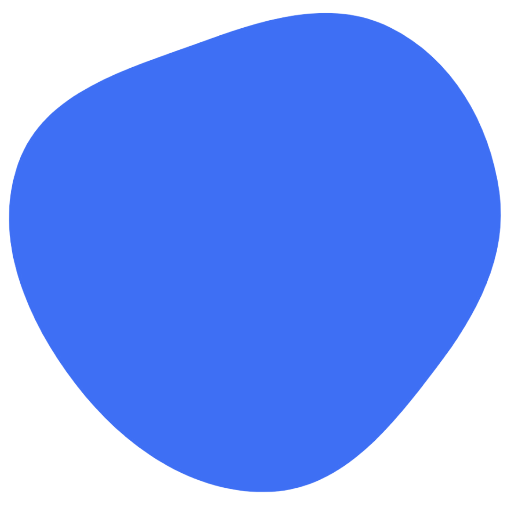

Hi!
I Am Della Wahyuni
Saya Mahasiswi Univeritas Muhammadyah Riau Fakultas Ilmu Komputer Jurusan Teknik Informatika Saya seorang Web Developer yang senang mengubah ide menjadi solusi digital yang nyata, Saya percaya bahwa website bukan hanya tampilan tapi juga pengalaman
